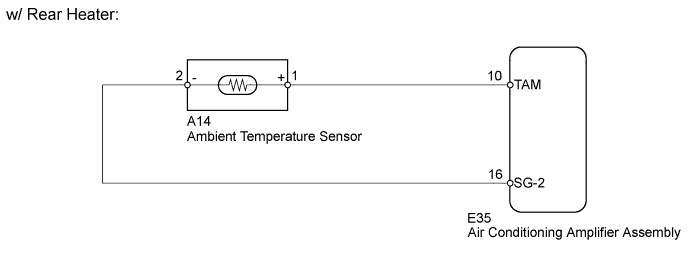
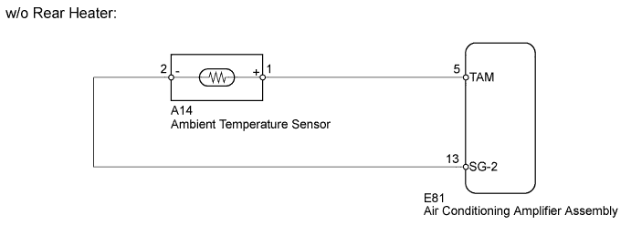
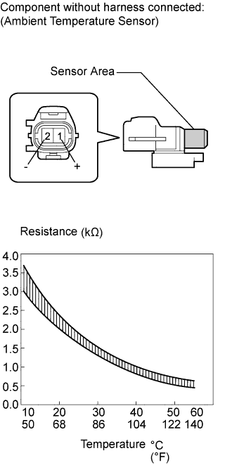
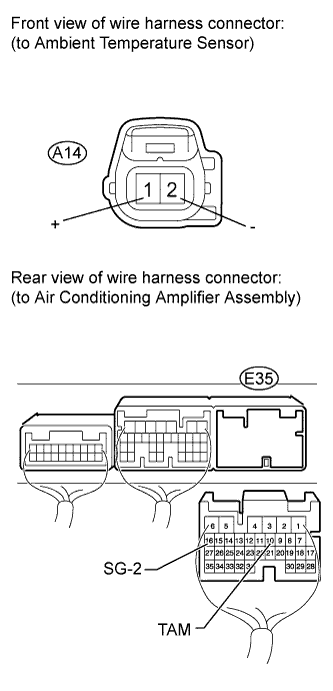
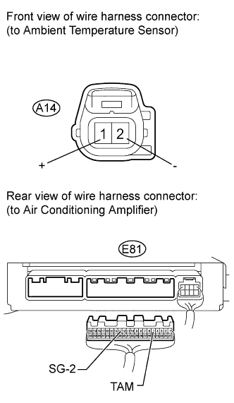

DTC B1412/12 Ambient Temperature Sensor Circuit |
| DTC Code | DTC Detection Condition | Trouble Area |
| B1412/12 | An open or short in the ambient temperature sensor circuit. |
|


| 1.READ VALUE USING INTELLIGENT TESTER (AMBIENT TEMPERATURE SENSOR) |
Use the Data List to check if the ambient temperature sensor is functioning properly.
| Tester Display | Measurement Item/Range | Normal Condition | Diagnostic Note |
| Ambient Temp Sensor | Ambient temperature sensor / Min: -23.3°C (-9.94°F) Max: 65.95°C (150.71°F) | Actual ambient temperature displayed | Open in the circuit: -23.3°C (-9.94°F). Short in the circuit: 65.95°C (150.71°F). |
|
| ||||
| OK | ||
| ||
| 2.INSPECT AMBIENT TEMPERATURE SENSOR |
 |
Remove the ambient temperature sensor (Click here).
Measure the resistance according to the value(s) in the table below.
| Tester Connection | Condition | Specified Condition |
| 1 (+) - 2 (-) | 10°C (50°F) | 3.00 to 3.73 kΩ |
| 15°C (59°F) | 2.45 to 2.88 kΩ | |
| 20°C (68°F) | 1.95 to 2.30 kΩ | |
| 25°C (77°F) | 1.60 to 1.80 kΩ | |
| 30°C (86°F) | 1.28 to 1.47 kΩ | |
| 35°C (95°F) | 1.00 to 1.22 kΩ | |
| 40°C (104°F) | 0.80 to 1.00 kΩ | |
| 45°C (113°F) | 0.65 to 0.85 kΩ | |
| 50°C (122°F) | 0.50 to 0.70 kΩ | |
| 55°C (131°F) | 0.44 to 0.60 kΩ | |
| 60°C (140°F) | 0.36 to 0.50 kΩ |
|
| ||||
| OK | |
| 3.CHECK HARNESS AND CONNECTOR (AMBIENT TEMPERATURE SENSOR - AIR CONDITIONING AMPLIFIER) |
 |
w/ Rear Heater
Disconnect the A14 sensor connector.
Disconnect the E35 amplifier connector.
Measure the resistance according to the value(s) in the table below.
| Tester Connection | Condition | Specified Condition |
| A14 (+) -1 - E35-10 (TAM) | Always | Below 1 Ω |
| A14-2 (-) - E35-16 (SG-2) | ||
| E35-10 (TAM) - Body ground | Always | 10 kΩ or higher |
| E35-16 (SG-2) - Body ground |
 |
w/o Rear Heater
Disconnect the A14 sensor connector.
Disconnect the E81 amplifier connector.
Measure the resistance according to the value(s) in the table below.
| Tester Connection | Condition | Specified Condition |
| A14-1 (+) - E81-5 (TAM) | Always | Below 1 Ω |
| A14-2 (-) - E81-13 (SG-2) | ||
| E81-5 (TAM) - Body ground | Always | 10 kΩ or higher |
| E81-13 (SG-2) - Body ground |
|
| ||||
| OK | ||
| ||